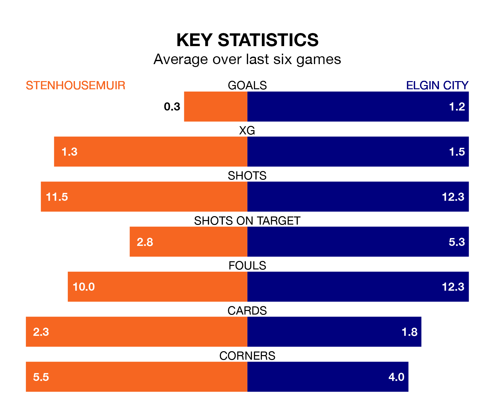

Stenhousemuir are heavy favourites to keep all three points at home in Saturday's kick-off against Elgin City.
The Warriors, who sit top of League Two with 32 games played, are priced at 1.5 to seal victory at Ochilview Park.
Sitting five places and 28 points behind them in the table, Elgin are 5.8 to win with *Betting Company*, while the draw is at 3.9.
In Darren Jamieson, Stenhousemuir can rely on one of the league's safest pair of hands. He has kept 19 clean sheets in his 32 appearances this season, and no 'keeper has prevented the opposition scoring more often in League Two.
In Elgin's net, Tom McHale has six clean sheets in 31 games. He has conceded a goal every 62 minutes, twice as often as the 125 minutes between goals for Darren Jamieson.
With 31 goals in 32 games so far this season, City are the league's lowest scorers with 1.0 goals per game. And they are conceding more than average, letting in 52 goals at a rate of 1.6 per game.
The Warriors, meanwhile, are above average scorers, with 1.4 goals per game, compared to a league average of 1.3. They have conceded 0.8 goals per game.
In the last 10 years, Stenhousemuir and Elgin have played each other on 21 occasions. Stenhousemuir won eight of them, Elgin seven, and they drew six times.
On average, the Warriors scored 1.5 goals and the Black & Whites 1.4 in those matches.
Their last meeting was on February 17, when they played out a 2-2 draw.
The hosts are in mixed form in League Two, with one win and five draws from their last six games.
With two wins and two draws over that period, the Black & Whites' form is similar – they have both taken eight points from 18.
Stenhousemuir's last match was on April 6, a 0-0 draw against East Fife.
Elgin drew 2-2 with Spartans last time out, also on April 6, with Brian Cameron and Ryan MacLeman on the scoresheet.
Updated: 11:20 (UTC), 09/04/24